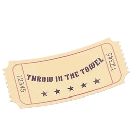

COACH INDEX NFL scheme identities · Throw in the Towel| # | Coach | Team | Value (pts/game) | Scheme value | Role |
|---|---|---|---|---|---|
| 1 | Liam Coen | JAX | +4.9 | +0.090 | HC |
| 2 | Ben Johnson | CHI | +4.7 | +0.092 | HC |
| 3 | Joe Brady | BUF | +4.4 | +0.033 | HC |
| 4 | Kyle Shanahan | SF | +3.7 | +0.089 | HC |
| 5 | Dan Campbell | DET | +2.9 | — | HC |
| 6 | Zac Taylor | CIN | +2.2 | +0.039 | HC |
| 7 | John Harbaugh | NYG | +2.1 | — | HC |
| 8 | Kliff Kingsbury | WAS | +1.8 | +0.032 | OC |
| 9 | Sean Payton | DEN | +1.3 | +0.017 | HC |
| 10 | Shane Steichen | IND | +1.2 | +0.033 | HC |
| 11 | Andy Reid | KC | +1.1 | +0.003 | HC |
| 12 | Todd Monken | CLE | +1.1 | +0.054 | HC |
| 13 | Brian Schottenheimer | DAL | +1.0 | +0.025 | HC |
| 14 | Matt LaFleur | GB | +0.8 | +0.043 | HC |
| 15 | Drew Petzing | DET | +0.6 | +0.012 | OC |
| 16 | Brad Idzik | CAR | +0.6 | +0.016 | OC |
| 17 | Declan Doyle | BAL | +0.5 | +0.006 | OC |
| 18 | Mike McCarthy | PIT | +0.5 | -0.043 | HC |
| 19 | Jim Harbaugh | LAC | +0.4 | — | HC |
| 20 | Brian Johnson | PHI | +0.4 | +0.011 | OC |
| 21 | Sean McVay | LA | +0.4 | +0.032 | HC |
| 22 | Dave Canales | CAR | +0.4 | -0.008 | HC |
| 23 | John Morton | DET | +0.1 | -0.003 | OC |
| 24 | Greg Roman | LAC | +0.0 | +0.009 | OC |
| 25 | Matt Nagy | NYG | -0.0 | +0.013 | OC |
| 26 | Josh Grizzard | TB | -0.1 | -0.002 | OC |
| 27 | Kevin Patullo | PHI | -0.2 | -0.007 | OC |
| 28 | Nick Caley | HOU | -0.2 | -0.016 | OC |
| 29 | Nick Sirianni | PHI | -0.3 | — | HC |
| 30 | Mike Vrabel | NE | -0.4 | — | HC |
| 31 | Klint Kubiak | LV | -0.6 | +0.007 | HC |
| 32 | Brian Fleury | SEA | -0.6 | -0.021 | OC |
| 33 | Eric Bieniemy | KC | -0.6 | -0.005 | OC |
| 34 | Ryan Grubb | SEA | -0.6 | -0.013 | OC |
| 35 | Pete Carmichael | NO | -0.6 | -0.005 | OC |
| 36 | Press Taylor | CHI | -0.7 | -0.001 | OC |
| 37 | Kevin O'Connell | MIN | -0.9 | -0.054 | HC |
| 38 | Sean Mannion | PHI | -1.0 | -0.042 | OC |
| 39 | Matt Canada | PIT | -1.1 | +0.001 | OC |
| 40 | David Blough | WAS | -1.2 | -0.005 | OC |
| 41 | Tim Kelly | NYG | -1.3 | -0.006 | OC |
| 42 | Zac Robinson | TB | -1.3 | -0.028 | OC |
| 43 | Dave Ragone | ATL | -1.5 | -0.029 | OC |
| 44 | Shane Waldron | CHI | -1.6 | -0.035 | OC |
| 45 | Mike McDaniel | LAC | -1.6 | -0.074 | OC |
| 46 | Mick Lombardi | LV | -1.7 | -0.019 | OC |
| 47 | Luke Getsy | LV | -1.8 | -0.049 | OC |
| 48 | Bobby Slowik | MIA | -1.9 | -0.057 | OC |
| 49 | Ken Dorsey | CLE | -1.9 | -0.060 | OC |
| 50 | Chip Kelly | LV | -2.0 | -0.045 | OC |
| 51 | Thomas Brown | CAR | -2.2 | -0.034 | OC |
| 52 | Alex Van Pelt | NE | -2.4 | -0.052 | OC |
| 53 | Kellen Moore | NO | -2.6 | -0.001 | HC |
| 54 | Nathaniel Hackett | ARI | -2.7 | -0.055 | OC |
| 55 | Bill O'Brien | NE | -2.8 | -0.056 | OC |
| 56 | Mike LaFleur | ARI | -2.9 | -0.002 | HC |
| 57 | Arthur Smith | PIT | -2.9 | +0.012 | OC |
| 58 | Josh McDaniels | NE | -3.0 | +0.002 | OC |
| 59 | Frank Reich | NYJ | -3.0 | -0.005 | OC |
| 60 | Tommy Rees | ATL | -3.5 | -0.098 | OC |
| 61 | Nick Holz | TEN | -3.5 | -0.090 | OC |
| 62 | Kevin Stefanski | ATL | -4.0 | — | HC |
| 63 | Tanner Engstrand | NYJ | -4.1 | -0.092 | OC |
| 64 | Brian Callahan | CIN | -4.4 | — | OC |
| 65 | Brian Daboll | TEN | -4.8 | -0.001 | OC |
| 66 | Mike Kafka | NYG | -5.0 | -0.119 | OC |
Every coach shown once — at his current team, or tagged FA if a free agent — with his overall (career) scheme; every value carries its rank1. Click a row for the year-by-year drill-down. (A coach's scheme can predate his current job — e.g. a coordinator now a head coach.) PROE pass-rate over expected · PA/SCRN/RPO/MOT play-action / screen / RPO / motion rate · 11P/12P/13P/21P/22P personnel usage (RB-TE, e.g. 12P = 1 RB 2 TE) · BLZ/MAN blitz / man-coverage rate · BOX defenders in box · pEPA/rEPA pass / designed-run EPA per play · dpEPA/drEPA pass / run EPA allowed (defense). Defense is credited to the defensive coordinator, offense to the play-caller (the OC, or the HC when he calls plays, tagged HC/OC). VALUE is the headline: net points per game the staff adds vs an average one — for a head coach it's his whole program (offense + defense + special teams + 4th-down decisions); for a coordinator it's just his unit. Head coaches who call neither unit still appear (tagged HC · doesn't call). SCH VAL is the QB- and opponent-adjusted scheme piece; where a record can't be separated from one quarterback the number is pulled toward league-average and flagged NR (low confidence) — or carries a ◦ for moderate reliability — but every coach is still shown and ranked; click any row for the full points breakdown. 2026: offense is live-2026 and 2026 EPA is folded in; the defensive scheme (blitz/man/box) runs through 2025, since 2026 snap-participation data isn't available yet.
Every coach has a data skeleton: the scheme he actually runs. We chart each team's 2023–26 play-by-play and personnel into a fingerprint, measuring how often he passes relative to the situation (PROE), his play-action, screen, RPO and motion rates, his personnel groupings, and on defense his blitz rate, man-coverage rate and box counts, then rank every coach on every dimension. Results (offensive and defensive EPA per play) sit alongside, so you see both who a coach is and whether it works.
Every coach is a permanent record: each row tags his role (HC / OC / DC) and whether he actually called the plays that season. The defense is credited to its defensive coordinator (so the Vikings' pressure goes to Brian Flores, not Kevin O'Connell); the offense to its play-caller — the OC by default, or the head coach when he calls them (tagged HC · PLAY-CALLER). A coordinator who's on staff but doesn't call is still on record, tagged DOESN'T CALL, with his unit's numbers shown as the context of his tenure. Who-calls-what is verified against reporting and maintained per team-season (e.g. for 2026: Mike LaFleur took over Arizona, Joe Brady was promoted in Buffalo, Dave Canales handed Carolina's calls to Brad Idzik). Coordinators and staffs are compiled and verified against public reporting, 2023–26.
Scheme value (SCH VAL) is the headline number: what a coach's system is worth once you adjust for the quarterback he had and the opponents he faced. It only holds up when a coach's record can be separated from a single quarterback — we measure that reliability for everyone. Defense separates cleanly (a new offense every week); offense often doesn't, because a caller runs nearly every snap with one QB. Where it can't be cleanly separated, the number is regressed toward league-average and flagged NR (low confidence) rather than hidden; a ◦ marks moderate reliability. Reliability shapes the number and the flag — it doesn't decide whether a coach appears. Creativity (CRTV) just scores how exotic the design is — a description of style, not a grade of quality.
College (the NFL/College toggle up top) runs the same models on FBS, 2023–26. One limit stays: there's no snap-charting at college scale, so no formation/motion/coverage fingerprint, and the college column is UNPRED — unpredictability (not "creativity" like the NFL): situational unpredictability (entropy of run/pass by down-distance-score), 4th-down aggression, and QB-run share pulled from play-by-play. We call it what it honestly is — the NFL's formation exoticness can't be measured at college scale. But the headline SCH VAL travels further than you'd expect. The transfer portal moves quarterbacks between play-callers every year, which is exactly the condition that identifies a two-way fixed-effects model, so college scheme value is actually better-separated from the quarterback than the NFL's — median reliability around 76% on offense and near 100% on defense, versus 37% for NFL offense. OvEx — SP+ against recruiting-talent rank — stays as the college-only read on beating the talent you signed (it nails the overachievers, Cignetti's JMU and Monken's Army). Among the tendency stats, PROE is the stickiest year to year and explosive-play rate the noisiest, so lean on that one least.
Where no coordinator is listed (Todd Bowles at TB, Bill Belichick in NE '23 call their own defenses), the scheme stays with the head coach. Play-calling isn't in the raw data — it's a maintained fact; flag any name that reads wrong and it's a one-line fix.